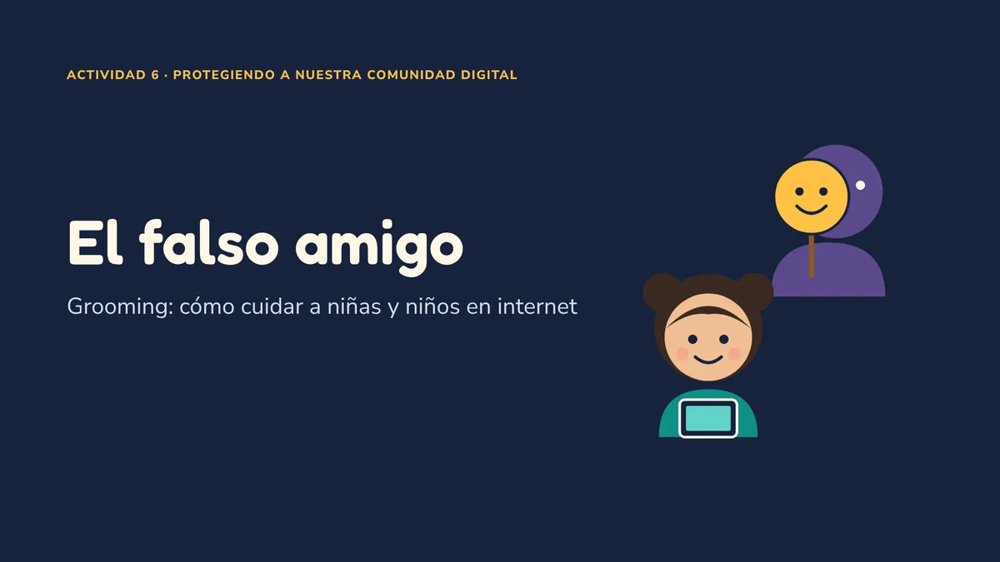

Cibercultura para mi Comunidad
Seis trabajos sobre delitos en internet, explicados en lenguaje sencillo. Aquí vas a encontrar casos reales que pasaron en México, un laboratorio de práctica, videos para ver en familia y consejos que puedes aplicar hoy mismo.

Cuidarnos en internet también se aprendeLas 6 actividades
Cada tarjeta te lleva a una actividad. Todas tienen una explicación corta, la evidencia del trabajo (video, capturas o documento) y lo que aprendimos para protegernos.
Ataque al SPEI (2018)
Cómo robaron cerca de 300 millones de pesos a bancos mexicanos.
2LaboratorioRedes y criptografía
Escaneos, ataques de red y cifrado, probados en un entorno controlado.
3VideoRansomware en Pemex (2019)
El secuestro digital que apagó miles de computadoras.
4EncuestaIngeniería social
¿Qué tanto sabemos de los engaños por correo, llamada o mensaje?
5VideoUsurpación de identidad
Los 7 tipos de robo de identidad y cómo protegerte.
6VideoGrooming: el falso amigo
Cómo cuidar a niñas y niños de los depredadores en línea.
El ataque al SPEI de 2018
El SPEI es el sistema del Banco de México por donde pasan las transferencias entre bancos. En 2018, unos delincuentes no atacaron el corazón del sistema: entraron por las "puertas laterales", los programas que cada banco usa para conectarse.
¿Qué pasó, en palabras sencillas?
Imagina un edificio con una bóveda muy segura (el núcleo del SPEI) y varias oficinas conectadas a ella (los bancos). Los ladrones no rompieron la bóveda: se metieron a algunas oficinas, se hicieron pasar por empleados y mandaron órdenes de pago falsas. El dinero salió hacia cuentas de terceros y se retiró rápidamente.
¿Qué leyes aplican?
El Código Penal Federal castiga el acceso sin permiso a sistemas de instituciones financieras (artículos 211 bis 4 y 211 bis 5). Además, Banxico revisó las fallas de los bancos y anunció sanciones.
Así se ve un ataque de red (en un laboratorio seguro)
Armé dos computadoras virtuales dentro de mi propia computadora, aisladas y bajo mi control, para observar en un ambiente seguro cómo se ven los riesgos de una red y cómo nos protege el cifrado. Todo fue con fines educativos: hacer esto contra equipos ajenos sin permiso es delito (art. 211 bis del Código Penal Federal).
Práctica 1 · Reconocer la red
Vimos qué equipos están conectados y qué "puertas" (servicios) tienen abiertas. Encontramos servicios viejos con fallas conocidas: como una casa con ventanas sin seguro.
Práctica 2 · Riesgos dentro de la red
Observamos cómo un equipo puede hacerse pasar por otro dentro de la misma red local y cómo una avalancha de solicitudes puede saturar un servicio. Por eso importan el monitoreo y la segmentación de redes.
Práctica 3 · Criptografía: los candados de internet
La criptografía es lo que protege tus contraseñas, tus pagos y tus mensajes. Probamos cuatro herramientas:
Hash (huella digital)
Cambias una sola letra y la "huella" cambia por completo. Sirve para saber si un archivo fue alterado.
AES (una sola llave)
Como un candado con una llave para cerrar y abrir. Es muy rápido, pero ambos deben tener la misma llave.
RSA (dos llaves)
Como un buzón: cualquiera puede meter cartas (llave pública), pero solo el dueño abre (llave privada).
HTTPS (el candado del navegador)
Combina las dos anteriores para que nadie lea lo que envías a una página.
| ¿Qué se alcanza a ver? | Sin candado (HTTP) | Con candado (HTTPS) |
|---|---|---|
| Nombre del sitio | Sí | Sí |
| Página exacta que visitas | Sí | No |
| Lo que escribes (contraseñas, datos) | Sí | No |
| Contenido de la respuesta | Sí | No |
Reflexión: criptografía y protección de datos
El laboratorio me dejó una idea clara: el cifrado no es un tema solo de expertos, es lo que separa una conversación privada de una postal que cualquiera puede leer. Cuando un sitio usa HTTP, una persona conectada a la misma red puede ver lo que escribes. Con HTTPS solo alcanza a ver el nombre del sitio. Por eso la regla más útil para cualquier persona es sencilla: no escribas contraseñas ni datos bancarios donde no veas el candado.
También aprendí que el cifrado protege la información, pero no protege a la persona del engaño. Si alguien te convence de darle tu contraseña, el candado no sirve. Por eso la criptografía y la educación van juntas: la técnica cierra la puerta, pero cada quien decide a quién se la abre.
En México, las empresas que guardan datos personales tienen la obligación de protegerlos. En marzo de 2025 se publicó una nueva Ley Federal de Protección de Datos Personales en Posesión de los Particulares, que exige medidas de seguridad como estas. Cifrar, respaldar y limitar quién accede a la información no es un lujo: es parte de cumplir la ley y de respetar a los clientes.
Ransomware en Pemex (2019)
El 10 de noviembre de 2019 miles de computadoras de Pemex se apagaron por un ransomware llamado DoppelPaymer: un programa que "secuestra" los archivos y pide dinero para liberarlos.
¿No carga? Ver en YouTube
- Pemex no pagó el rescate.
- El ransomware se "renta" como franquicia (Ransomware como Servicio).
- Defensas clave: respaldos fuera de línea, actualizaciones y verificación en dos pasos.
¿Qué tanto sabemos de ingeniería social?
La ingeniería social es engañar a una persona para que entregue información o dinero. No ataca a la computadora: ataca la confianza. Diseñé una encuesta anónima de 20 preguntas para medir qué tanto reconocemos estos engaños en la familia y en el trabajo.
Cómo se diseñó
- Cinco bloques: perfil, conocimiento general, 8 escenarios reales, experiencia y percepción de riesgo.
- Anónima: no pide nombre ni correo.
- Cada técnica se pregunta como una situación de la vida diaria, no como definición.
Usurpación de identidad
Alguien usa tus datos (nombre, CURP, INE, cuentas o tu cara) para hacerse pasar por ti y obtener dinero, créditos o acceso. Le puede pasar a cualquier persona.
¿No carga? Ver en YouTube
Los 7 tipos que explica el video
Cómo protegerte
- Verificación en dos pasos en todas tus cuentas.
- Contraseñas largas y distintas para cada sitio.
- Revisa bien los enlaces antes de dar clic.
- Evita hacer pagos en redes wifi públicas.
Grooming: el falso amigo
El grooming es cuando un adulto se gana la confianza de una niña, niño o adolescente por internet con fines de abuso sexual. No entra a la fuerza: se hace pasar por amigo. Este video está hecho para verlo en familia.
¿No carga? Ver en YouTube
Para niñas y niños: 3 superpoderes
Nunca es tu culpa. Un amigo de verdad no te pide guardar secretos de tus papás.
¿Dónde denunciar en México?
No borres mensajes ni capturas: son tu evidencia. No pagues ni negocies con quien te amenaza.
Guardia Nacional: reporte de delitos cibernéticos.
Emergencias, si hay peligro inmediato.
Denuncia formal en la fiscalía de tu estado.
Referencias (APA 7)
- Banco de México. (2018, 29 de agosto). Reporte de análisis forenses: Versión pública. https://www.banxico.org.mx/spei/d/%7B4A977A24-0889-3F24-A717-DF9DBBA118C1%7D.pdf
- Cámara de Diputados del H. Congreso de la Unión. (2024). Código Penal Federal. https://www.diputados.gob.mx/LeyesBiblio/pdf/CPF.pdf
- Consejo de Europa. (2001). Convenio sobre la Ciberdelincuencia (Convenio de Budapest). https://rm.coe.int/1680081561
- Fletcher, R., Tzani, C., & Ioannou, M. (2025). Danger on Discord: How 764 prey on and extort minors. Assessment & Development Matters, 17(2), 59–63. https://doi.org/10.53841/bpsadm.2025.17.2.59
- IBM Security. (2025). Cost of a data breach report 2025. IBM. https://www.ibm.com/reports/data-breach
- Instituto Nacional de Estadística y Geografía. (2026, 7 de julio). Módulo sobre Ciberacoso (MOCIBA) 2025 [Comunicado de prensa 37/26]. https://www.inegi.org.mx/contenidos/saladeprensa/boletines/2026/mociba/MOCIBA2025_CP.pdf
- Ley Federal de Protección de Datos Personales en Posesión de los Particulares [LFPDPPP]. Diario Oficial de la Federación, 20 de marzo de 2025 (México).
- National Center for Missing & Exploited Children. (2026). CyberTipline data 2025. https://www.missingkids.org/cybertiplinedata
- Piña Libién, H. R. (2019). Cibercriminalidad y ciberseguridad en México [Lectura del curso].
- Verizon Business. (2026). 2026 data breach investigations report. Verizon. https://www.verizon.com/business/resources/reports/dbir/